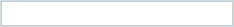

Exemples
Les conseillers à domicile de ReCAP ont demandé aux résidants de participer à la tournée d'évaluation de la maison. Ils ont pris note de leurs réactions à chaque étape du processus. À la fin de la visite, ils les ont invités à rédiger avec eux la liste des réparations ou rénovations prioritaires à exécuter.
Les programmes «Les citoyens à l'oeuvre» et «Comptez sur moi!», ont permis aux participants de franchir différentes étapes préparatoires avant de signer un engagement.
Water Efficient Durham demandait aux propriétaire de signer un formulaire d’engagement lors de la quatrième visite des étudiants. Le facteur de réussite le plus déterminant à cette étape-ci était le niveau de confiance que les étudiants avaient réussi à établir avec les propriétaires.
Conseil: Les recherches démontrent que cet outil ne s'avérera pas utile si la personne n'a pas déjà l'intention d'agir ou si elle sent qu'on exerce des pres-sions indues sur elle.
Votre Programme
Comment faire pour déterminer si la personne est assez motivée pour s'engager dans l'activité?

Exemples
ReCAP a demandé aux gens de s'engager verbalement à procéder aux rénovations et réparations indiquées sur la liste qu'ils avaient aidé à rédiger.
Dans le cadre «Les citoyens à l'oeuvre» et «Comptez sur moi!», les participants ont été invités à compléter et signer un formulaire d'engagement volontaire.
Le programme Walking the Talk? a distribué aux participants une carte-rappel d'un jaune attrayant à afficher dans leur foyer de même qu'un bloc-note, pour leur rappeler leur engagement à participer au projet.
Les surveillants de Coupez le contact ont localisé les véhicules en marche au ralenti et s'en sont approchés pour parler aux conducteurs à travers la vitre. Après avoir discuté des effets de la marche au ralenti, on les invitait à s'engager à arrêter le moteur de leur véhicule quand ils s'arrêtaient. Les conducteurs qui s'engageaient à couper le contact quand ils s'arrêtaient, recevaient un autocollant transparent à coller sur la vitre témoignant de leur engagement à arrêter le moteur, de même que des cartons d'information.
Conseil: Les recherches révèlent que les engagements écrits semblent avoir un effet plus durable que les engagements verbaux.
Conseil: Les engagements anonymes ou privés se sont avérés moins efficaces que les engagements partagés ou publics.
Votre Programme
Quel type d'engagement demanderez vous aux gens de prendre?
Verbal, ou
Écrit
Public, ou
Privé
Quand et comment leur demanderez-vous de prendre cet engagement?
Exemples
Lors des visites à domicile, les responsables de ReCAP disaient simplement aux gens : « Si vous êtes satisfaits des services rendus, veuillez en faire part aux autres. » Cette demande était exprimée verbalement à la fin de la visite et se répétait par écrit sur le formulaire de recommandations qu'on laissait aux occupants.
Le Groupe d'action sur les pesticides de Waterloo a d'abord demandé, puis s'est vu accorder, une série de rencontres avec des employés de la ville et le conseil municipal. Il a ensuite convaincu la ville de Waterloo de mettre sur pied un groupe de travail qui examinerait les alternatives à l'épandage de pesticides et qui en déterminerait le coût. Finalement, certaines des recommandations ont été incorporées au Programme de protection des végétaux de la ville.
Conseil: On a démontré que les gens qui acquiescent d'abord à une petite requête auront plus tendance à répondre à des requêtes plus grandes à l'avenir.
Votre Programme
Comment faire pour inciter les gens à acquiescer à des requêtes de plus en plus grandes?